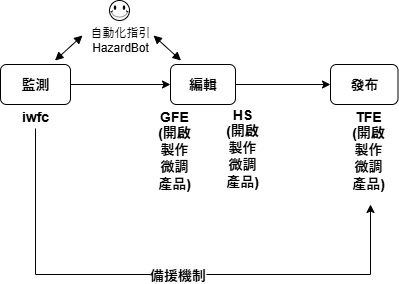
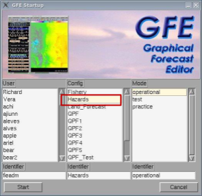
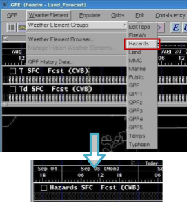
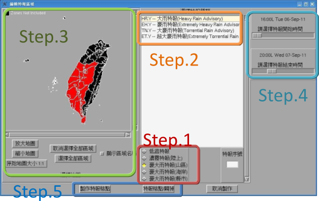
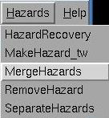
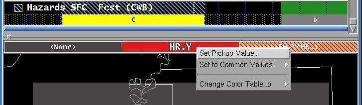
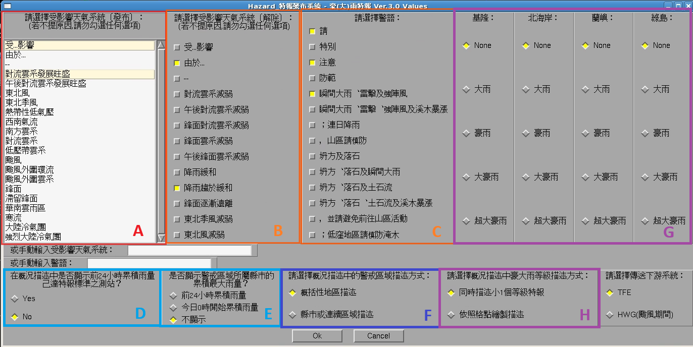
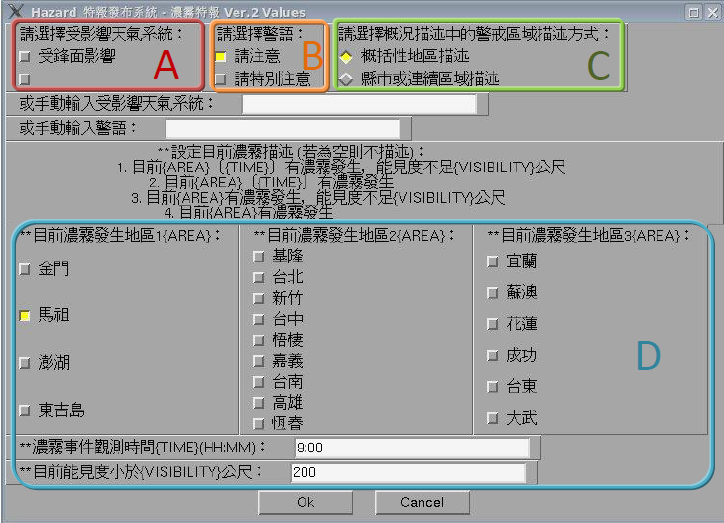
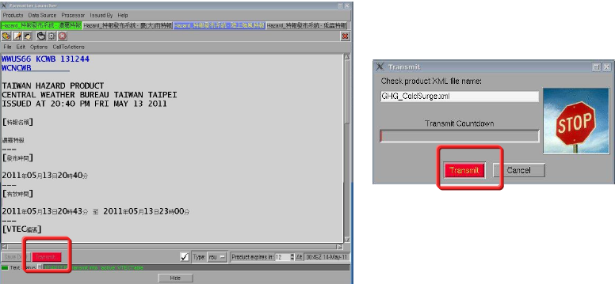

1. 系統總覽
1.1 文件目的
在新舊代系統轉換期間系統眾多且複雜，透過此文件介紹各類特報編輯與發布的工具，期待其可熟悉操作。
1.2.2 流程概述
本系統涵蓋「監測」、「編輯」與「發布」三大階段。由 iwfc 啟動監測，經由 GFE 與 HS 製作產品，最後透過 TFE 向外發布。目前預報中心產製的特報基礎皆以格點預報或鄉鎮為基礎。
※ GFE 未產製｢熱帶性低氣壓特報｣格點，須直接從 TFE 系統編輯。
| 特報種類 | 特報格點 | TFE系統 | |
|---|---|---|---|
| (解除)豪大雨特報 | A1 | → | TFE2 |
| 濃霧特報 | A1 | → | TFE2 |
| 低溫特報 | A2(V.18) | → | TFE2 |
| 強風特報 | A2(V.23) | → | TFE2 |
| 高溫資訊 | A2(V.18) | → | TFE2 |
| 熱帶性低氣壓特報 | X | TFE | |
| 長浪即時訊息 | X | TFE2 |
總覽流程
1.2.1 系統流程圖

🗯️ 劇烈天氣定義
| 特報種類 | 等級 | 縮寫 | 定義 |
|---|---|---|---|
| 低溫特報 | 黃色燈號 | YC.Y | 平地最低氣溫攝氏 10 度下。 |
| 高溫資訊 | 黃色燈號 | YH.Y | 氣溫達攝氏 36 度以上 |
| 豪大雨特報 | 大雨特報 | HR.Y | 24 小時累積 80mm 以上或時雨量 40mm 以上。 |
🌧️ 編輯流程_豪大雨及濃霧特報_A1 GFE
介面登入方式
進入特報介面的方式有兩種：
- A (左圖)： 在登入 GFE 時點選中間欄位的
Hazards。 - B (右圖)： 依序點擊
Weather Element→Weather Element Groups→Hazards。


特報格點製作：
點擊 Hazards → MakeHazard_tw 開啟視窗：
- 選擇特報種類（縣市/山區/海岸）。
- 選擇等級（一次選一種）。
- 選取區域（拖曳左鍵變亮紅）。
- 設定本地時間。
- 點擊「製作特報格點」。

完成各類格點製作後，請務必執行 MergeHazards 合併格點並存檔。


產品產製：
Step1：製作官方格點： 點選 Products → Publish to Official。
Step2：進行文字轉換： 開啟文字轉換器 (TF)
- 選擇
Products→Hazard→ 豪(大)雨特報 Ver.3.0 或 濃霧特報 Ver.2。 - 選單開啟後，點選齒輪 開始執行程式。
豪大雨選單說明如下：

- A. 選擇「發布」原因： 可複選，發「解除」報時不理會。
- B. 選擇「解除」原因： 可複選，發「發布」報時不理會。
- C. 選擇警語： 發布解除報時可不理會。
- D. 提及雨量資訊： 預設選 NO。
- E. 顯示實際觀測雨量： 預設不顯示。
- F. 警戒區域描述方式： 概括性描述或縣市/連續區域描述。
- G. 特定地區選取： 基隆、北海岸、蘭嶼、綠島，若要發布須從此選單選取。
- H. 描述小1等級特報： 繪製豪雨時若選此項，會轉出「大雨或豪雨」。
濃霧特報選單說明如下：

- A. 選擇影響原因。 B. 選擇警語。 C. 選擇描述方式。 D. 手動輸入觀測資料。
進行文字預覽與傳送
按 OK 執行後，標籤變為綠色即轉換完畢。確認內容後，按 Transmit 鍵傳送至 TFE2。

解除豪大雨特報流程
豪(大)雨特報解除時須發布「解除報」。原理是將格點「由有變無」：
(刪除格點) → (Merge) → (存檔) → (Publish to Official) → (執行 TF 產製解除報)
🌡️ 編輯流程_高溫資訊、低溫特報
請參考 A2 GFE (18版) 操作手冊內容...
🌬️ 編輯流程_強風特報
請參考 A2 HS (23版) 操作手冊內容...
⚡ 大雷雨即時訊息
請參考 A2 HS (23版) 操作手冊內容...
👀 發布流程_TFE2
請參考 TFE2 網頁操作與審核流程...